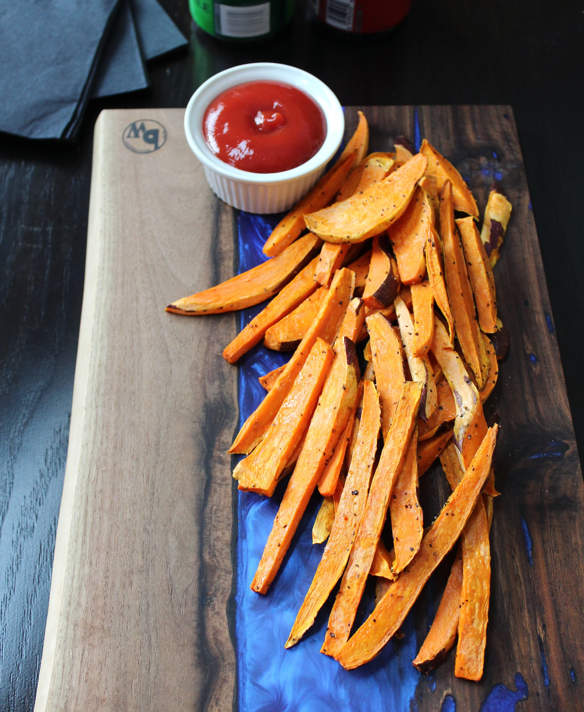

Sweet Potato Fries

Description
These sweet potato fries are a great side dish that my family loves.
Ingredients
- 3 cloves garlic, minced
- ½ pound mushrooms
- 1 tablespoon vegetable oil
- 1 (10.75 ounce) can tomato puree
- 1 (10 ounce) package frozen spinach, thawed and drained
- 2 teaspoons garlic salt
- 2 tablespoons Italian-style seasoning
- 1 (12 ounce) package soft or firm tofu
- ⅔ (16 ounce) package instant lasagna noodles
Steps
- Preheat oven to 375 degrees F (190 degrees C.)
- In a large skillet, saute garlic and mushrooms in oil until all the liquid is cooked out. Add 1/3 tomato
puree to mushrooms and garlic, cook 2 to 3 minutes, and remove from heat.
- In a microwave-safe bowl, combine spinach, garlic salt, Italian seasoning and tofu. Blend until the mixture
is an even consistency. Heat in a microwave on high for 2 minutes.
- In a 9x9 inch baking pan, our one thin layer of remaining tomato puree, a layer of noodles, 1/2 the tofu
mixture, the mushroom sauce, a layer of noodles, 1/ the tofu mixture, a layer of tomato puree, a layer of
noodles, and a final layer of tomato puree.
- Bake 45 minutes in the preheated oven.
Nutrition Facts
Per Serving: 427 calories; protein 23.3g; carbohydrates 62.2g; fat 12.7g; cholesterol 4.4mg;
sodium 1705.4mg.